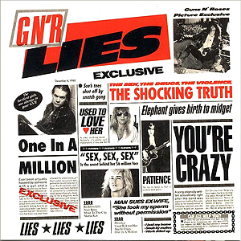
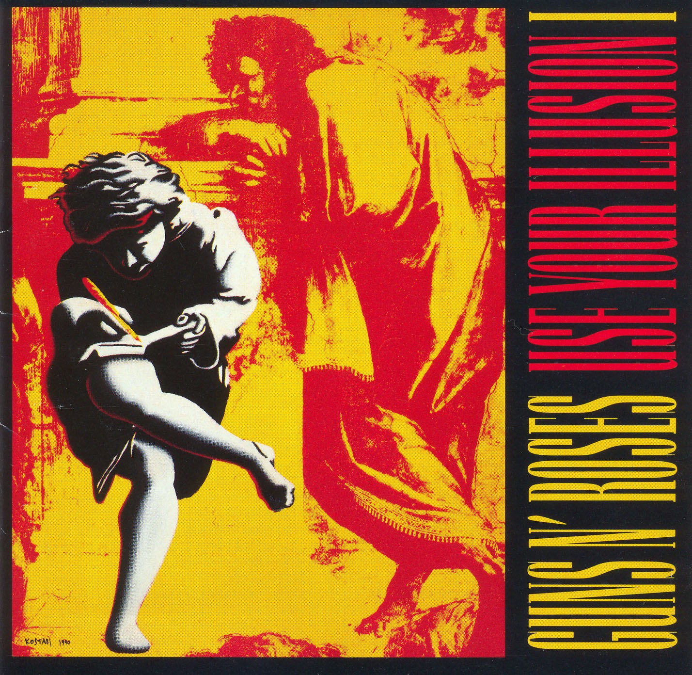
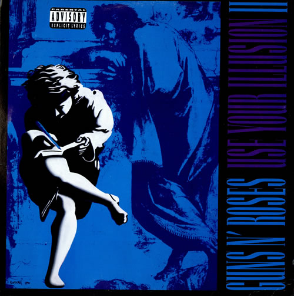
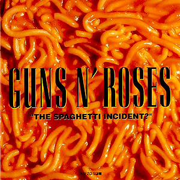
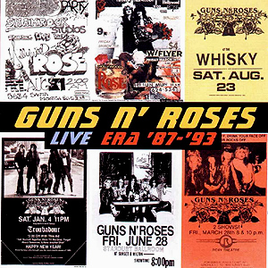
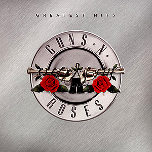
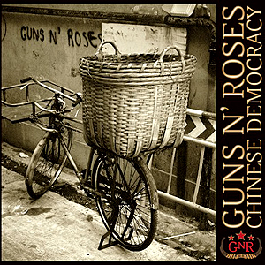

Discografia

Appetite For Destruction (1987)
O primeiro álbum completo do GN’R, Appetite For Destruction, é um dos mais populares álbuns de hard rock da história. Ainda hoje, o álbum tem estado entre os Top 200 álbuns pela Billboard ou Top Pop Catalog chart num total de 545 semanas. Vendendo mais do que 28 milhões de cópias pelo mundo (18 milhões somente nos EUA, segundo nota da RIAA em 2008) – 15 vezes platina nos Estados Unidos. Manteve-se em 1º por cinco semanas. Appetite For Destruction é o segundo álbum de estréia mais vendido da história do rock. O álbum é composto por três faixas Top 10: ouro (1º) o single “Sweet Child O´ Mine”, o hino “Welcome To The Jungle” (7º) e o rock frenético de “Paradise City” (5º). A capa original do álbum foi censurada em diversos países, pois demonstra uma cena de estupramento. A capa foi rapidamente substituída, mas no Brasil podemos encontrar o disco com as duas capas. A revista “Kerrang!” elegeu Appetite For Destruction como o melhor álbum de rock de todos os tempos.
GN’R Lies (1988)
No ano de 1988, GN’R Lies, composto de músicas de um EP independente de 1986, “Live?!*@Like A Suicide”, e mais novas gravações de estúdio, seguiram Appetite For Destruction alto nas estatísticas. Subindo rapidamente a 2ª posição nas paradas, o álbum eleito pelo Grammy (como Hard Rock Performance) foi cinco vezes platina (cada nível de platina implica na venda de mais que um milhão de unidades) chegando ao ouro (4º) representado pela balada “Patience”.
Use Your Illusion I (1991)
Em 17 de Setembro de 1991, com uma das maiores antecipações já liberadas na música, ambos Use You Illusion I e Use You Illusion II foram lançados. O fato marcante após o lançamento, eram os estoques nas lojas que não duravam nem 24 horas. As pessoas faziam filas gigantescas na porta das lojas atrás dos álbuns duplos. O álbum foi caracterizado por dois singles de ouro com “November Rain” (3ª posição nas paradas) e “Don´t Cry” (10º) mais outro Top 40 com “Live And Let Die” (33º).
Use Your Illusion II (1991)
Use Your Illusion II ostentou outro hit de ouro com o single prévio “You Could Be Mine” (29º posição), que pode ser ouvida no filme EXTERMINADOR DO FUTURO II. Cada um dos álbuns Use Your Illusion foram sete vezes platina. O I alcançou o 2ª colocação nas paradas e o II alcançou o 1º lugar.
The Spaghetti Incident? (1993)
Uma coletânea de covers do Guns N’ Roses, recheada de punk e músicas que influenciaram os membros da banda desde seus primeiros anos. “THE SPAGHETTI INCIDENT?” alcaçou o 4º lugar nos hits e ganhou platina. O disco possui a canção de Charles Manson, LOOK AT YOUR GAME GIRL, escondida, como última faixa.
Live Era ’87-’93 (1999)
O álbum duplo ao vivo “Live Era: ’87-’93” é uma compilação de 22 músicas tiradas dos shows dos Guns, a maioria da Use Your Illusion Tour. Os membros Matt Sorum e Gilby Clarke aparecem como “músicos convidados” mesmo estando em muitas faixas. A música “Coma” só esta presente nas prensagens japonesas do álbum. Nos EUA, o disco ganhou certificado OURO pela RIAA.* A faixa ’Coma’ é exclusiva da versão japonesa do álbum.
Greatest Hits (2004)
Coletânea com os maiores sucessos do Guns N’ Roses, incluindo a faixa ’Sympathy For The Devil’ dos Rolling Stones (original do filme ’Entrevista com o Vampiro’ de 1994). Apesar do disco ter sido lançado pela gravadora contra a vontade do Guns N’ Roses, foi um sucesso de vendas, passando a marca de 5 milhões de cópias vendidas. Curiosidade: O álbum foi relançado no dia 2 de junho de 2008 no Reino Unido, para o “Dia dos Pais”.
Chinese Democracy (2008)
O Chinese Democracy se tornou o álbum mais aguardado da história do rock, sendo prometido por Axl Rose
desde o final dos anos 90. Em fevereiro de 2006, Axl contou à revista Rolling Stone que a banda está trabalhando em 32 músicas, sendo que 28 estão
praticamente finalizadas e, destas, 13 entrarão no CD. Mais de 13 milhões de dólares já foram investidos no álbum, sendo apelidado de “O álbum mais caro
jamais lançado” pelo jornal ’The New York Times’.
– Em 14 de setembro de 2008, a faixa “Shackler’s Revenge” é lançada no game musical Rock Band 2, para a plataforma de video-game Xbox 360.
– Em 10 de outubro de 2008, a faixa “If The World” foi lançada exclusivamente para os créditos de encerramento do filme “Body of Lies”, estrelado por Leonardo DiCaprio.
– Em 16 de outubro de 2008, a Best Buy liberou a capa e tracklist do álbum, no BestBuy.com, com a data de lançamento para 23 de novembro. A empresa fechou contrato com o GN’R para ter exclusidade nas vendas do Chinese Democracy.
– Em 22 de outubro de 2008, a faixa título do álbum, “Chinese Democracy”, foi liberada para as rádios, se tornando o primeiro single do álbum. A música tocou 683 vezes em todas as rádios do planeta monitoradas via satélite. No mesmo dia, o site oficial do Guns N’ Roses (gunsnroses.com) é atualizado com uma imagem que informa a data de lançamento (23/11/2008) e uma contagem regressiva até o dia de lançamento. Além disso, a Rolling Stone divulga o press release oficial sobre o álbum.
– Em 29 de outubro de 2008, um comercial de 15 segundos para divulgação do Chinese Democracy estréia no Canadá, no canal TSN.
– Em 1 de novembro de 2008, um comercial de 30 segundos para divulgação do Chinese Democracy estréia nos EUA, durante o intervalo do programa Saturday Night Live. Outros comerciais pela Europa e Japão seriam transmitidos ao longo dos próximos dias.
– Em 17 de novembro de 2008 , a faixa “Better” estreia como segundo single de Chinese Democracy.
– Em 20 de novembro de 2008 , o Guns N’ Roses disponibiliza o álbum Chinese Democracy completo em streaming em seu MySpace oficial. Em cerca de 24 horas, o álbum já havia sido executado mais de 3 milhões de vezes, se tornando o recordista de acessos para audição no MySpace.
– Em 23 de novembro de 2008 , finalmente, o álbum mais esperado da história do rock é lançado.
Voltar ao Início
© Todos os Direitos Reservados - Desenvolvido por Matheus Rocha